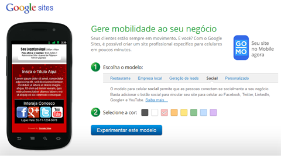

GOOGLE SITES
"Seus clientes estão sempre em movimento. E você? Com o Google Sites, é possível criar um site profissional específico para celulares em poucos minutos."

Escolha o modelo e Selecione a cor.
No nosso exemplo vamos escolher o modelo Social. Depois de ter escolhido o modelo e selecionado a cor de preferência, clique no botão Experimentar este modelo.
Visualize o seu Site Mobile. Se você gostou, clique no botão Utilizar Modelo.
Se você ainda não estiver conectado, entre com o seu E-mail e Senha do Google e clique no botão Login.
Digite um nome para o seu site em Escolher nome para o Web site. Depois, digite o código de segurança que aparece no final da página e clique no botão Criar.